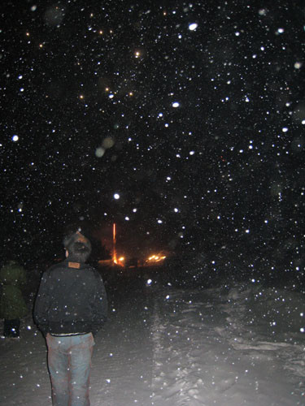

时间：2007年3月
地点：中国·雪乡
终于要拍摄我的第一首单曲《痒》的MV了，由于太兴奋，临走前几晚一直睡不着。
从来没有想过会到那样寒冷的地方去，零下20几度，过膝的白雪，刺骨的寒风，我还要表现的舒展再舒展，享受在享受。。。。。。噢买嘎得！！
为了这次出行，我做了全副武装的准备，一切可以发热的，取暖的东东，统统带上（用不用再说，呵呵）。
出发了，熊猫眼先用眼镜来遮一下。到了机场才发现，居然忘记带身份证，还好妈妈飞车送来了。哎！临行前状况不断，希望后面顺利拉：）
飞机上，我和我们的王总一起，她坚持一定要亲自陪我去，辛苦她了，鞠躬！！！这次的拍摄地点在中国雪乡，到了哈尔滨之后还要走7个多小时的车程，听说当地最低温度在零下20几度左右，而且有大半年的时间被积雪覆盖，真的是难以想象的寒冷啊!
中午11点半，我们降落在哈尔滨太平机场，第一次看到那么厚的雪，我很是激动，立刻换了羽绒服，戴起围巾和帽子冲了出去。
刹那间，我的睫毛被冻住了，呼出来的气都变白了。。。。。。可大家，都争抢跟这第一眼的雪景拍照留念，然后，迅速钻进车子里。
上路没多久，我们的车子瓦他了，大家四处求救，而我却越来越兴奋，哈哈！拍照拍照！！！

到达目的地已经黑天了，漆黑的外面除了雪和灯什么也看不见。先填饱肚子再说，这边的饭菜都好大份阿！！小鸡炖蘑菇最好吃了，嘿嘿！
好了，酒足饭饱之后，开始工作，试装。。。。。。且听下回：）